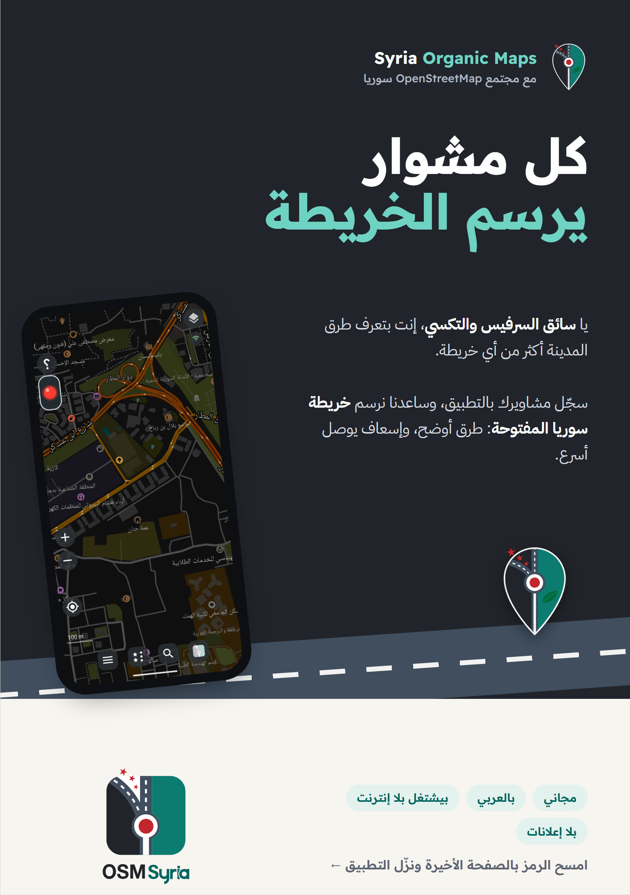
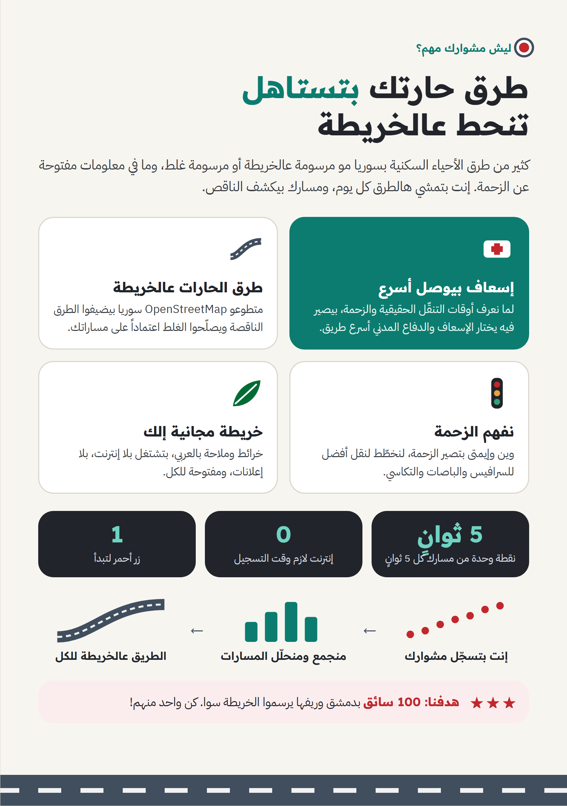
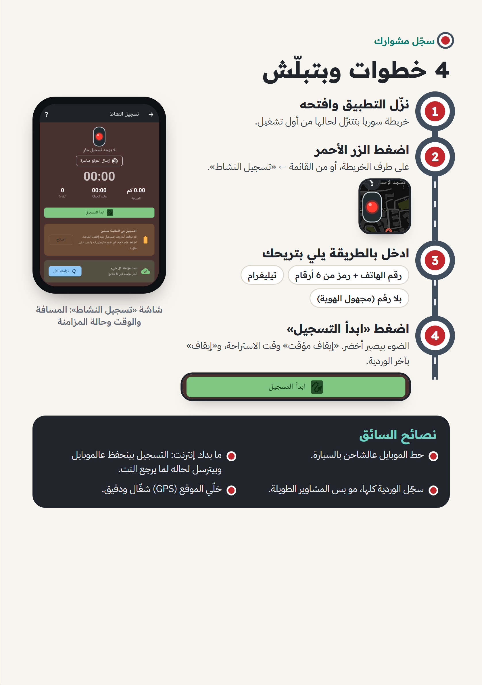
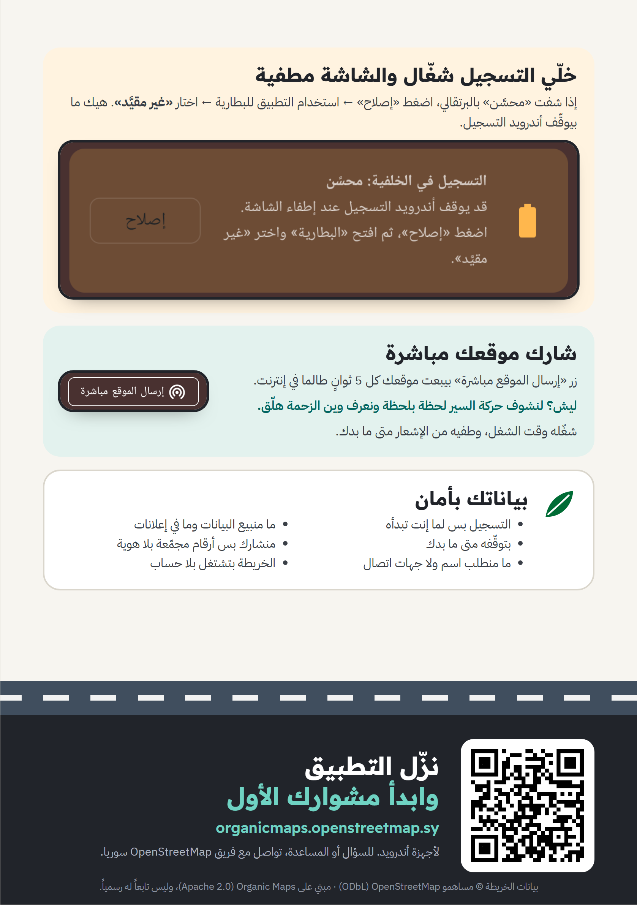
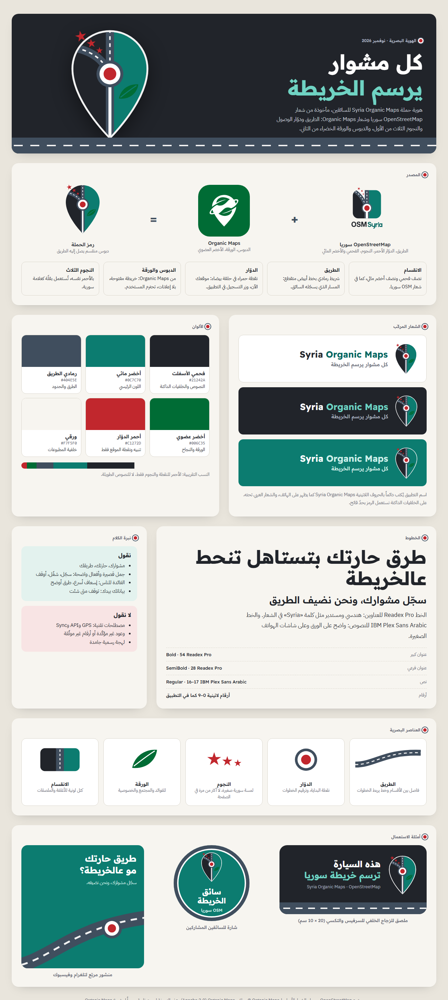
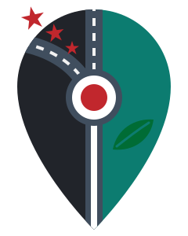
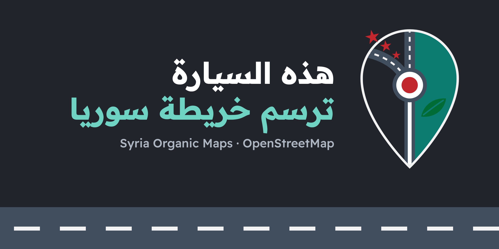
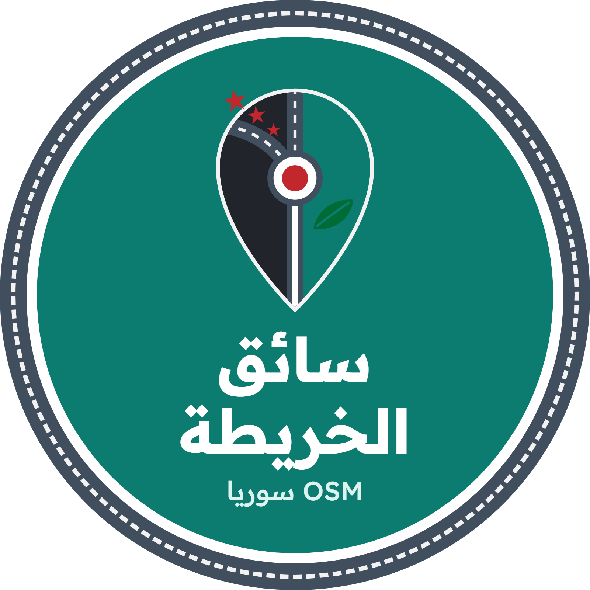
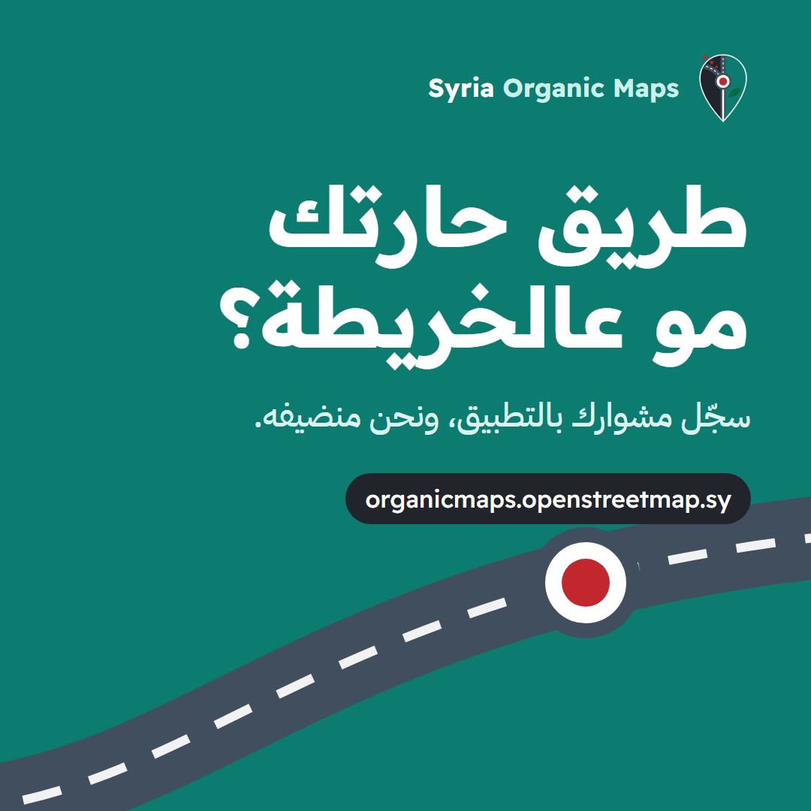

كل تصاميم حملة «كل مشوار يرسم الخريطة» في مكان واحد: افتح التصميم، أو نزّله صورة أو PDF، أو نزّل كل شيء دفعة واحدة.










شعار OpenStreetMap سوريا وشعار Organic Maps اللذان أُخذت منهما الهوية. شعار Organic Maps © مطوّروه (Apache 2.0).
بعد تعديل أي تصميم، أعد توليد الصور وملفات PDF والملفات المضغوطة بالأمر python Syria/brand/export.py (يحتاج Chrome واتصالاً بالإنترنت للخطوط).